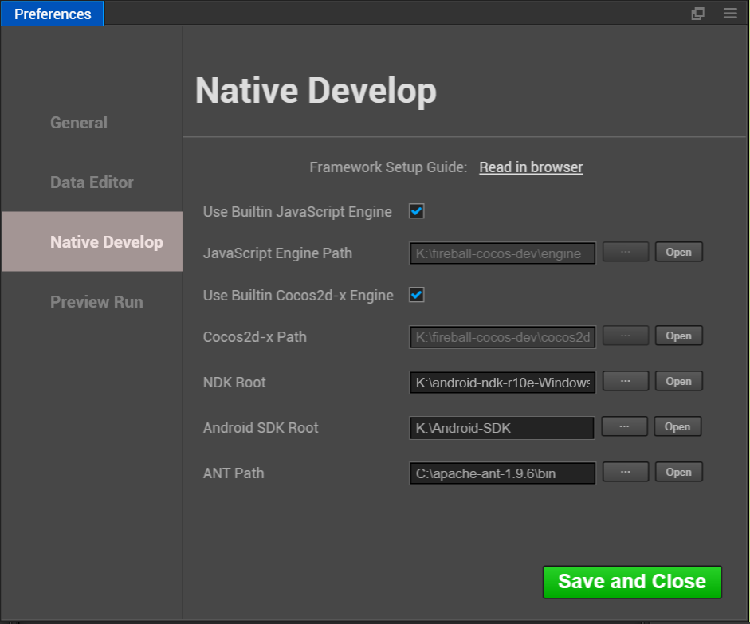
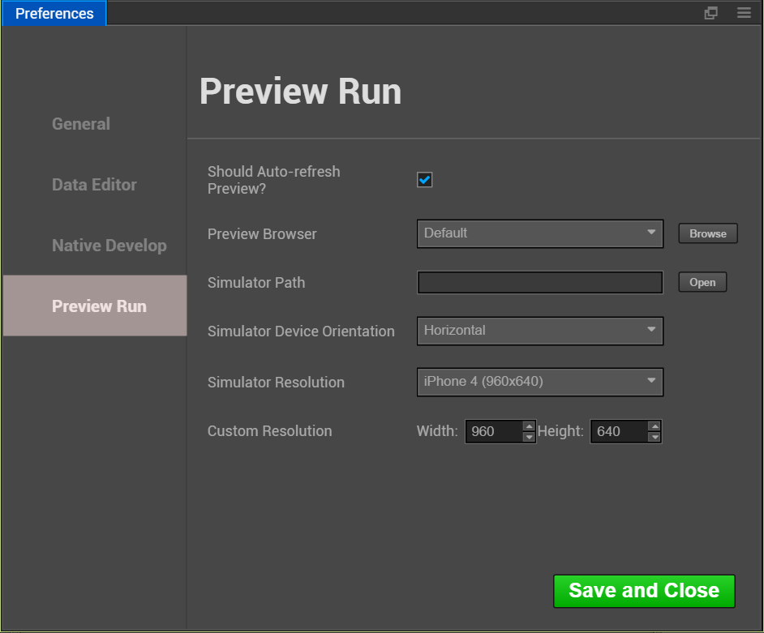

Preferences
Preferences the panel provides a variety of personalized global editor settings,
To Open Preferences Window, Please select the main menu CocosCreator->Preferences.
Preferences is composed of several different pages, all settings are divided into the following categories. Modify the Settings after click Save and Close button, settings will only take effect.
General

Language
Can choose 中文 or English, it will take effect after Cocos Creator editor restarts.
IP Address
Case the user may have multiple IP addresses on this computer, Manually select one and two-dimensional code as a default when previewing address address. This will list all native IP, You can also choose Auto get an IP editor automatically picked for you.
Displayed Build Console Log
This item is selected, Build log will be displayed directly in the process of publishing original project Console panel.
Non-selected, Building the release of primary logs are saved in the %USER/.CocosCreator/logs/native.log project,
you can also use the Console Log button in the upper left corner of the panel Cocos Console Log option to open the document.
Spin step
In the Properties, all numeric property has a set of UP and DOWN arrows next to the input box, values that can be used to step Input:

When hovering close to the value of the property name, The cursor will turn into  such a shape, then Drag the mouse, can also according to a continuous increase or decrease the value of step amplitude.
such a shape, then Drag the mouse, can also according to a continuous increase or decrease the value of step amplitude.
The above two ways to modify the value，The default step size is 0.1,
Spin step says each time you click the step button or drag the mouse to change the step amplitude.
For example, if you mainly use numbers to integers in the script, you can take the step size is set to 1,
can be adjusted more easily.
Note：After modifying the steps to refresh the Editor window (Ctrl/Cmd + R), set the Stride length will take effect
Data Editor

This category is used to set the default open mode for scripts and resources.
External Script Editor
You can use built-in Code Editor or any external text tool executable file, as in Assets opens when you double-click a script file. Also available in the drop-down menu select Internal, or click Browse button select the executable file of the preferred text editor.
External Picture Editor
Similar to the above option, used here to set when Assets, double-click the picture file, open the picture with the default application path.
Native Develop

This classification is used to set the build is released to the native platform ( iOS, Android, Mac, Windows ), the required development environment path.
Use Builtin JavaScript Engine
Whether to use Cocos Creator the built-in 'engine' path as JavaScript engine path. This engine is used for Scene to render the scene, declarations and other built-in components engine module in the Web environment.
JavaScript Engine Path
In addition to using engine, you can also customize to https://github.com/cocos-creator/engine to clone or
fork a copy of the engine to the local anywhere,
then uncheck Use Builtin JavaScript Engine and set the Use Builtin JavaScript Engine path to
your custom engines. You can use the editor to customize your engine.
Use Builtin Cocos2d-x Engine
Whether to use Cocos Creator the built-in 'cocos2d-x' path as cocos2d-x c++ engine path. This engine is used for all Build native platform ( iOS, Android, Mac, Windows ) project to build and compile.
Cocos2d-x Path
Use Builtin Cocos2d-x Engine cancel previous selections, you can manually specify the path cocos2d-x. Note cocos2d-x engine used here must be downloaded from the https://github.com/cocos-creator/cocos2d-x-lite or the warehouse's fork.
NDK Path
Set the NDK Path, See Setup Native Development Environment.
Android SDK Path
Set the Android SDK Path, See Setup Native Development Environment.
ANT Path
Set the ANT Path, See Setup Native Development Environment.
Preview Run

When using Play button directly above the main window, you can set various options.
Should Auto-refresh Preview
When browsers or simulator have when running your scene, After you save the scene or recompile the script is whether you should refresh the preview device.
Preview Browser
From the drop-down menu, select system default browser or click the Browse button to manually specify a path to the browser.
Simulator Path
Starting with version v1.1.0, cocos simulator used in the Cocos Creator is placed on the cocos2d-x engine path. When using a customized version of the engine, you need to compile your own path simulator to the engine. Click Open button you can open the currently specified in the file system path of the simulator. Convenient debugging positioning.
Simulator Device Orientation
Specify the simulator runtime is a landscape or portrait.
Simulator Resolution
Select a resolution from the default device as a simulator for resolution.
Custom Resolution
if the default resolution does not meet the requirements, you can manually enter the Height and Width of the screen to set the simulator resolution.